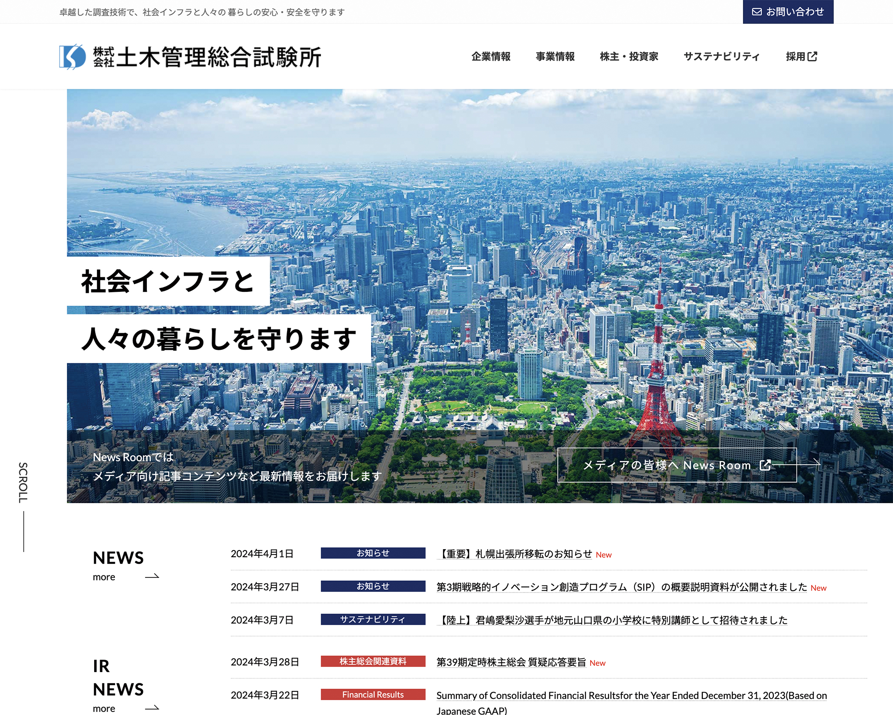

【実務実績】株式会社土木管理総合試験所 様

建設コンサルタント事業を運営する企業のコーポレートサイト。既存サイトが7年目を迎えたため、リニューアルを提案。情報やコンテンツの更新、デザインの統一、UIUXの改善を行い、ユーザーの継続利用を促進させ、最終的な利益の拡大を目的とする。
株式会社土木管理総合試験所／コーポレートサイト／2023.4
URL
目的
ユーザーの継続利用／最終的な利益の拡大
ターゲット
35〜40歳／男性
デザインコンセプト
旧サイトのコンセプト「変化のあるサイト」を継続し、生きている情報を発信。男性ユーザーが多いため、シンプルかつ力強く直感的なデザインを心がける。IR情報のコンテンツを充実させたため、コーポレートカラーよりもトーンを抑えた配色にし、信頼性と安定感を演出。また、写真を多様することで、土木業界のイメージを一新し、爽やかで明るい雰囲気を印象付けた。
担当
企画／XD／WordPress／GoogleAnalytics
期間
| 現状分析／目標設定 | ：1ヶ月半（調査：12時間、資料：8時間） |
|---|---|
| コンテンツ作成 | ：2ヶ月（選定と作成：12時間、資料：8時間） |
| デザインカンプ | ：1ヶ月（デザイン：10時間、資料：4時間） |
| サイトの実装 | ：1ヶ月（WordPress：35時間） |
| サイト公開 | ：1週間（設定：4時間、確認など：4時間） |
| 公開後の分析 | ：2週間（調査：5時間、資料：8時間） |
※期間＝他部署の連携や打ち合わせなど含む全体の期間：（実際の作業時間）
コーディングについて
サイトの実装については、ローカル環境を構築、WordPress（有料テーマ、プラグイン）を導入、固定ページや投稿記事など全ページを制作、を担当。カスタムCSS機能を利用し、ボタンやアイキャッチのあしらいなどに対して、簡単なCSSの記述を行う。
成果・工夫
- アクセス数の増加：ユーザー31%増、セッション21%増（公開3ヶ月後／前年度比）
- WordPressやGoogleanalyticsの操作マニュアルを作成し、部内で共有することで属人化させない環境を整える。
- 現状分析からデザイン、サイト実装までのタスクを、基本的に1名体制で進行。